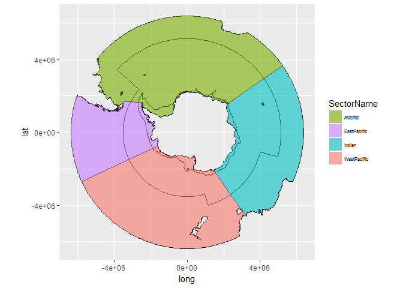

00 precalulate structures
inst/workflow/00_L3bin_ucells.R - this builds a bin index for ocean colour, and populates this into the cache DB
a daily task extracts the southern ocean bins for MODISA (SeaWiFS already done), and the db index provides a direct look up for bin number to sector/zone
01 pre-extract data
inst/workflow/01_bulk_aceecor - this extracts daily ICE and SST values to a faster file cache
Regions
Get the regions and make a detailed map of the assessment zoning.
library(aceecostats)
library(sp)
library(raster)
labs <- data.frame(x= c(112406,4488211,-1734264,-4785284), y=c(4271428,-224812,-3958297,-104377), labels=c("Atlantic","Indian", "West Pacific", "East Pacific"))
labs <- SpatialPointsDataFrame(labs[,1:2],labs, proj4string = CRS(proj4string(aes_zone)))
plot(aes_zone, col = aes_zone$colour, border="grey")
text(labs$x, labs$y, labs$labels, cex=1.5)
# latitude zone labels
lat.labs<- function(the.proj="polar", cex = 1){
if(the.proj=="latlon"){
ext <- extent(aes_zone_ll)
text("Polar", x=ext@xmin, y=ext@ymin, xpd=NA, pos=2, cex=cex)
text("High latitude", x=ext@xmin, y=ext@ymin*0.8, xpd=NA, pos=2, cex=cex)
text("Mid latitude", x=ext@xmin, y=ext@ymin*0.6, xpd=NA, pos=2, cex=cex)
}
if(the.proj=="polar"){
text(c("Polar", "High latitude", "Mid latitude"), x=c(113064.6,-1017581.1,-3642294), y=c(-1518296,-2285519,-3012363), cex=cex, col=rgb(0,0,0,0.7))
}
}
lat.labs(cex = 1.1)
#library(raadtools)
#topo <- crop(readtopo("gebco_14"), extent(-180, 180, -90, -30))
#bathy2000 <- rasterToContour(topo, levels = -2000)
#usethis::use_data(bathy2000)
statareas <- readRDS("/home/shared/data/assessment/sectors/ccamlr_statareas.rds")
bathy <- spTransform(disaggregate(bathy2000), projection(aes_zone))
bathy$len <- rgeos::gLength(bathy, byid = TRUE)
plot(subset(bathy, len > 2e5 ), lty = 1, col = "navyblue", add = TRUE)
plot(spTransform(subset(orsifronts::orsifronts, front == "pf"), projection(aes_zone)), add = TRUE, lwd = 2)
grat <- graticule::graticule(lons = c(-115, -50, 55, 145), ylim = c(-90, -25), lats = c(-85, -80, -75, -70, -65, -60, -55, -50, -45, -40, -35, -30), proj =raster::projection(aes_zone), xlim = c(-180, 180))
gratlabs <- graticule::graticule_labels(lons = c(-115, -50, 55, 145), lats = c( -80, -70, -60, -50, -40, -30), yline = -25, xline = 30, proj = raster::projection(aes_zone))
plot(grat, add = TRUE, lty = 2, col = rgb(0, 0, 0, 0.5))
text(subset(gratlabs, islon), label = parse(text = gratlabs$lab[gratlabs$islon]))
text(subset(gratlabs, !islon), label = parse(text = gratlabs$lab[!gratlabs$islon]))
plot(statareas, add = T)
#plot(spTransform(orsifronts::orsifronts, raster::projection(aes_zone)), add = TRUE)In unprojected form.
library(aceecostats)
library(raster)
library(sp)
plot(aes_zone_ll, col = aes_zone_ll$colour, border="grey")
ll_labs <- spTransform(labs, CRS(proj4string(aes_zone_ll)))
text(ll_labs$x, ll_labs$y, labels=labs$labels, cex=0.6)
lat.labs("latlon")
Metadata
The data is stored on the map object itself.
knitr::kable(as.data.frame(aes_zone))| SectorName | Zone | area_km2 | colour | ID |
|---|---|---|---|---|
| Atlantic | High-Latitude | 19855197.0 | #7CAE0099 | 1 |
| Atlantic | Continent | 1084548.0 | #7CAE00FF | 2 |
| Atlantic | Mid-Latitude | 15671351.4 | #7CAE004D | 3 |
| EastPacific | High-Latitude | 3241353.4 | #C77CFF99 | 4 |
| EastPacific | Continent | 724857.5 | #C77CFFFF | 5 |
| EastPacific | Mid-Latitude | 10573933.0 | #C77CFF4D | 6 |
| Indian | High-Latitude | 11699156.9 | #00BFC499 | 7 |
| Indian | Continent | 706453.8 | #00BFC4FF | 8 |
| Indian | Mid-Latitude | 13068371.7 | #00BFC44D | 9 |
| WestPacific | High-Latitude | 8136176.3 | #F8766D99 | 10 |
| WestPacific | Continent | 885409.0 | #F8766DFF | 11 |
| WestPacific | Mid-Latitude | 23025500.3 | #F8766D4D | 12 |
Prefer ggplot2?
## TODO fix this code
library(ggplot2)
library(ggpolypath)
tab <- fortify(aes_zone)
zcols <- as.data.frame(aes_zone)[, c("colour", "SectorName", "Zone")]
tab$SectorName <- zcols$SectorName[factor(tab$id)]
ggplot(tab) + aes(x = long, y = lat, group = group, fill = SectorName) + scale_fill_manual(values = setNames(zcols$colour, zcols$SectorName)) + geom_path() +
geom_polypath() + theme(legend.text=element_text(size=6)) + guides(position = "bottom") + coord_equal()